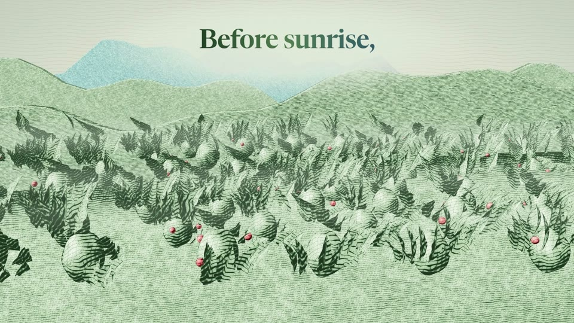

01Hook + set-up · A0.0–5.7 s
EWS · eye level · crane down
A drop of coffee falls onto the paper and blooms open into coffee hills at first light: ridges in mist, rows of shrubs heavy with cherries.
“Before sunrise,”
Sound The drop's tick; wind; far birds; one Rhodes chord.
In Bloom opener